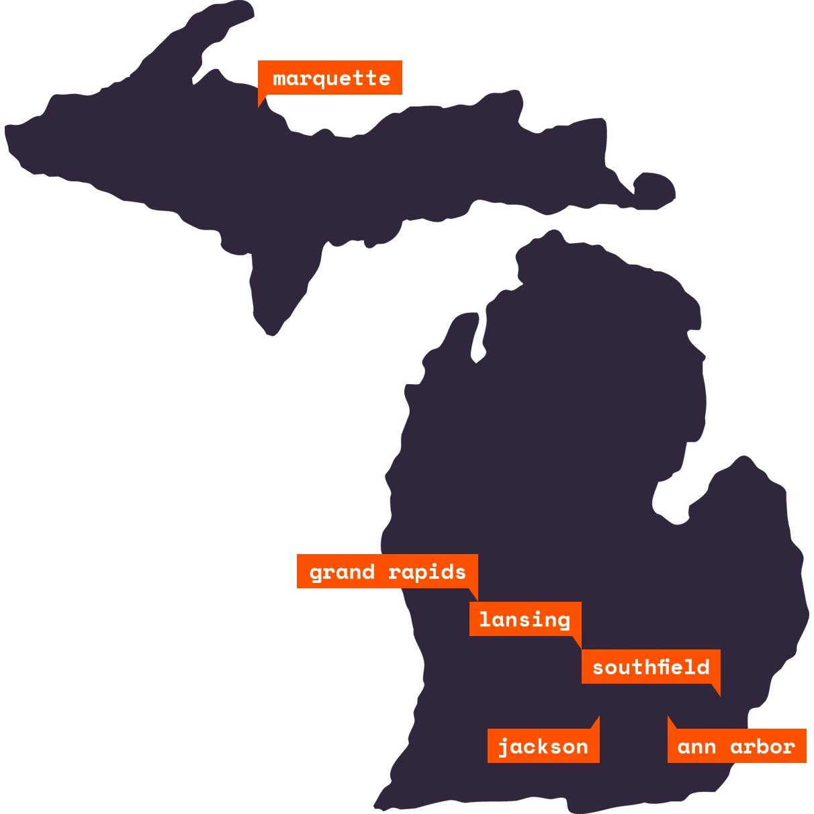

- Southfield
- Jackson
- Lansing
- Ann Arbor
- Grand Rapids
- Marquette
#misec launched with BSides Detroit 2011. We started with a simple idea: make the BSides experience an ongoing part of life in Southeastern Michigan. This expanded into monthly meet-ups, workshops, capture the flag teams, and more throughout the state. We continue to put on the Converge conference in Detroit.
We currently have six chapters in Michigan. Hope to see you out for a local talk or social event soon!
Misec has a huge online presence. We stream events on Youtube, are on Twitter, Discord, and run our own mailing list.
We are a dedicated network of like-minded people in the industry. Join us to discuss current events, projects, passions, and more! Misec offers presentations, training, and even fun outings.
Students have the opportunity to learn from real world professionals and gain some out of classroom experience through misec. They are also welcome to participate in events, talks, and more.
Security starts with developers. Developers are encouraged to work with us to understand why security is so important and how to protect the applications you work on or break them before a hacker can.
#misec is an open, inclusive community
View our Code of Conduct >>